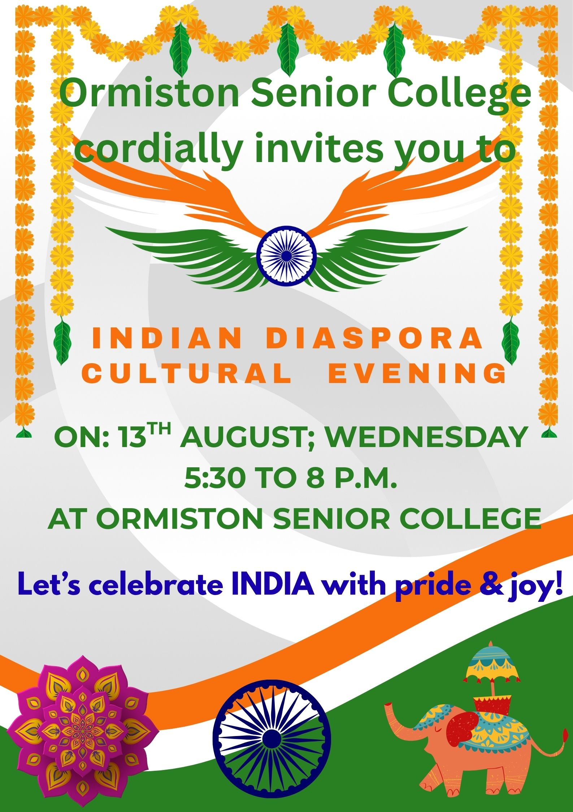

Welcome to the Club of Indian Diaspora at Ormiston Senior College!
Learn MoreThe Club of Indian Diaspora (CID) celebrates Indian culture, festivals, music, and traditions. We provide a space where students can learn about Indian heritage, share experiences, and participate in cultural events at Ormiston Senior College.
Vision of the Club: To promote cultural understanding, diversity, and inclusion within our school by celebrating and sharing the rich heritage of India.
The Club of Indian Diaspora (CID) at Ormiston Senior College celebrates the rich culture and traditions of India. Our club provides a welcoming space for students from all backgrounds to explore Indian festivals, music, dance, and food.
Through cultural performances, celebrations, and presentations, students share their heritage, build friendships, and promote diversity within our school community.

.jpg)
Everyone is welcome to join the Club of Indian Diaspora. If you are interested in culture, music, dance or simply want to make new friends, this club is for you.
Any student at Ormiston Senior College can join the club. You do not need to be Indian — everyone interested in learning about Indian culture and traditions is welcome.
Students can take leadership roles by helping organise events, planning festival celebrations, leading performances and supporting club activities.
The club is supported by a teacher who guides students, helps organise meetings and ensures activities run smoothly.
If you would like to become a member, visit the Join page or speak to the teacher in charge to sign up. We would love to welcome new members!
Join the Club